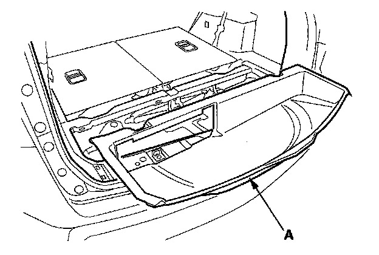

Trim Removal/Installation - Cargo Area
Trim Removal/Installation - Cargo AreaSpecial Tools Required
KTC trim tool set SOJATP2014 *
* Available through the American Honda Tool and Equipment Program
NOTE:
- Put on gloves to protect your hands.
- Take care not to bend or scratch the trim and panels.
- Use the appropriate tool from the KTC trim tool set to avoid damage when removing components.
1. Remove the cargo floor lid (A).
2. Detach the hooks (A) from the rear side trim panel (B), and pull the rear trim panel (C) up by hand to detach the clips (D, E), then remove it.
3. Turn the lock knobs (A) 90 °, then remove the tool set holder (B).
4. Remove the screws, then remove the cargo lid hinges (A).

5. Remove the cargo rear trim panel (A).
6. Install the trim in the reverse order of removal, and note these items:
- If the clips are damaged or stress-whitened, replace them with new ones.
- Push the clips and hooks into place securely.